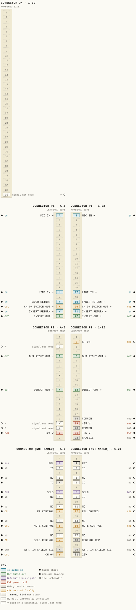
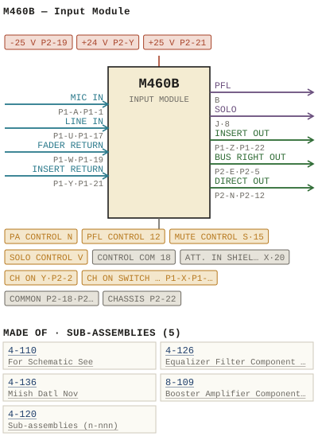

M460B — Input Module
| Type | module |
| Category | INPUT-PRE-AMPS |
| Try it | simulator & front panel · download package (zip) |
| Earliest dated evidence | 1976|9 — title-block date |
| Evidence | "DATE DEC 76" in PUBLIC/Manuals + tech DOCUMENTS/Modules/M460B - Input Module/M460B - P033 - B460-01-003.jpg |
| Confidence | high |
| All years found | 1976|9, 1977|10 |
| Variants | M460, M460A, M460C, M460D, M460E, M460F, M460K, M460L, M460LA, M460M, M460T |
| Folder | Modules/INPUT-PRE-AMPS/M460B |
Connections and circuit (ideal SPICE model)
Drawn live from its RTO-144 connections: run the generator, turn the gain, watch the VU. Open the netlist to see how the model is built.
Pictures


M460B.pinout.svg

M460B.connections.svg 1976 - M460B - 4-126-02-001 - GCALE AMPLIFIER SCHEMATH.jpg
1976 - M460B - 4-126-02-001 - GCALE AMPLIFIER SCHEMATH.jpg 1976 - M460B - 460-01-003 - CONTROL CONTROL COMMON.jpg
1976 - M460B - 460-01-003 - CONTROL CONTROL COMMON.jpg 1977 - M460B - 460-04-007 - LUL CONNECTOR REAR VEW.jpg
1977 - M460B - 460-04-007 - LUL CONNECTOR REAR VEW.jpg 1974 - 4-110-02-001 - 4-110 PRE-AMP HP FILTER SCHEMATIC - DRN DM - ISS 8.jpg
1974 - 4-110-02-001 - 4-110 PRE-AMP HP FILTER SCHEMATIC - DRN DM - ISS 8.jpg 1976 - M460B - 001.jpg
1976 - M460B - 001.jpg 1976 - M460B - 002.jpg
1976 - M460B - 002.jpg 1976 - M460B - 003.jpg
1976 - M460B - 003.jpg 1976 - M460B - 004.jpg
1976 - M460B - 004.jpg 1976 - M460B - 005.jpg
1976 - M460B - 005.jpg 1976 - M460B - 006.jpg
1976 - M460B - 006.jpg 1976 - M460B - 007.jpg
1976 - M460B - 007.jpg 1976 - M460B - 008.jpg
1976 - M460B - 008.jpg 1976 - M460B - 009.jpg
1976 - M460B - 009.jpg 1976 - M460B - 010.jpg
1976 - M460B - 010.jpg 1976 - M460B - 011.jpg
1976 - M460B - 011.jpg 1976 - M460B - 4-110-02-001 - MPONENT DESICN RIG CIG.jpg
1976 - M460B - 4-110-02-001 - MPONENT DESICN RIG CIG.jpg 1976 - M460B - 4-110-06-001 - FOR SCAEMATIC SEE DRA WING.jpg
1976 - M460B - 4-110-06-001 - FOR SCAEMATIC SEE DRA WING.jpg 1976 - M460B - 4-126-06-001 - SOCKETS ACCEI.jpg
1976 - M460B - 4-126-06-001 - SOCKETS ACCEI.jpg 1976 - M460B - 4-136-06-003 - MIISH DATL NOV.jpg
1976 - M460B - 4-136-06-003 - MIISH DATL NOV.jpg 1976 - M460B - 460-02-003 - DIL NOL INPUT MODULE CKDE SCHRMATC.jpg
1976 - M460B - 460-02-003 - DIL NOL INPUT MODULE CKDE SCHRMATC.jpg 1976 - M460B - 460-04-013 - IXI CONTROL FUNCT IONS- NOTE THAT THE.jpg
1976 - M460B - 460-04-013 - IXI CONTROL FUNCT IONS- NOTE THAT THE.jpg 1976 - M460B - 8-109-02-001 - ISSUDATE REVISION.jpg
1976 - M460B - 8-109-02-001 - ISSUDATE REVISION.jpg 1976 - M460B - 8-109-02-001.jpg
1976 - M460B - 8-109-02-001.jpg 1976 - M460B - 8-109-06-001 - RYLU COMPONENT LAYOUT.jpg
1976 - M460B - 8-109-06-001 - RYLU COMPONENT LAYOUT.jpg 1976 - M460B - 8-109-06-002 - OUTPUT AMPLIFIER.jpg
1976 - M460B - 8-109-06-002 - OUTPUT AMPLIFIER.jpg 1976 - M460B - Input Module Schematic.jpg
1976 - M460B - Input Module Schematic.jpg 1976 - M460B - P001 - Title Page.jpg
1976 - M460B - P001 - Title Page.jpg 1976 - M460B - P002 - 1-1.jpg
1976 - M460B - P002 - 1-1.jpg 1976 - M460B - P003 - 1-2.jpg
1976 - M460B - P003 - 1-2.jpg 1976 - M460B - P004 - 2-1.jpg
1976 - M460B - P004 - 2-1.jpg 1976 - M460B - P005 - 2-2.jpg
1976 - M460B - P005 - 2-2.jpg 1976 - M460B - P006 - 2-3.jpg
1976 - M460B - P006 - 2-3.jpg 1976 - M460B - P007 - 2-4.jpg
1976 - M460B - P007 - 2-4.jpg 1976 - M460B - P008 - 2-5.jpg
1976 - M460B - P008 - 2-5.jpg 1976 - M460B - P009 - 3-1.jpg
1976 - M460B - P009 - 3-1.jpg 1976 - M460B - P010 - 3-2.jpg
1976 - M460B - P010 - 3-2.jpg 1976 - M460B - P011 - 4-1.jpg
1976 - M460B - P011 - 4-1.jpg 1976 - M460B - P012 - 4-2.jpg
1976 - M460B - P012 - 4-2.jpg 1976 - M460B - P013 - 4-3.jpg
1976 - M460B - P013 - 4-3.jpg 1976 - M460B - P014 - 4-4.jpg
1976 - M460B - P014 - 4-4.jpg 1976 - M460B - P015 - 4-5.jpg
1976 - M460B - P015 - 4-5.jpg 1976 - M460B - P016 - 4-6.jpg
1976 - M460B - P016 - 4-6.jpg 1976 - M460B - P017 - 8-109-1-1.jpg
1976 - M460B - P017 - 8-109-1-1.jpg 1976 - M460B - P018 - 8-109-1-2.jpg
1976 - M460B - P018 - 8-109-1-2.jpg 1976 - M460B - P019 - 8-109-2-1.jpg
1976 - M460B - P019 - 8-109-2-1.jpg 1976 - M460B - P020 - 8-109-2-2.jpg
1976 - M460B - P020 - 8-109-2-2.jpg 1976 - M460B - P021 - 8-109-2-3.jpg
1976 - M460B - P021 - 8-109-2-3.jpg 1976 - M460B - P022 - 8-109-2-4.jpg
1976 - M460B - P022 - 8-109-2-4.jpg 1976 - M460B - P023 - 8-109-2-5.jpg
1976 - M460B - P023 - 8-109-2-5.jpg 1976 - M460B - P024 - 4-110-1-1.jpg
1976 - M460B - P024 - 4-110-1-1.jpg 1976 - M460B - P025 - 4-110-2-1.jpg
1976 - M460B - P025 - 4-110-2-1.jpg 1976 - M460B - P026 - 4-110-3-1.jpg
1976 - M460B - P026 - 4-110-3-1.jpg 1976 - M460B - P027 - 4-110-3-2.jpg
1976 - M460B - P027 - 4-110-3-2.jpg 1976 - M460B - P028 - 4-126-1-1.jpg
1976 - M460B - P028 - 4-126-1-1.jpg 1976 - M460B - P029 - 4-126-2-1.jpg
1976 - M460B - P029 - 4-126-2-1.jpg 1976 - M460B - P030 - 4-126-2-2.jpg
1976 - M460B - P030 - 4-126-2-2.jpg 1976 - M460B - P031 - 4-126-2-3.jpg
1976 - M460B - P031 - 4-126-2-3.jpg 1976 - M460B - file.jpg
1976 - M460B - file.jpg M460B - P010 - 3-2(1).jpg
M460B - P010 - 3-2(1).jpg M460B - P010 - 3-2.jpg
M460B - P010 - 3-2.jpgPrice history
| Year | Kind | Price | Listed as | Effective | Source |
|---|---|---|---|---|---|
| 2005|38 | used market value | 250.00 | M460B Input | wbsps - website ARCHIVE/WBSPS 2008/ARCHIVE/old website/PriceGuide.htm | |
| 2006|39 | used market value | 250.00 | M460B Input | wbsps - website ARCHIVE/WBSPS 2008/ARCHIVE/jan 2006 shell/priceguide.htm |
Pinout & connections
Each contact as its own documents name it: 51 named (22 high, 28 medium, 1 low confidence). An empty slot is a contact no page names. Hover a contact for its source; the table under the drawing lists them.
pinout (SVG) · connections (SVG) · pins (JSON)
Pin evidence — 55 contacts
| Pin | Signal | Kind | Confidence | Read from | Source |
|---|---|---|---|---|---|
| B | PFL | audio bus / pair | medium | drawing rows | 1977 - M460B - 460-04-007 - LUL CONNECTOR REA…, p. 1 “row 2 of the drawing, left of the pin column” |
| 2 | FFI | named, kind not clear | medium | drawing rows | 1977 - M460B - 460-04-007 - LUL CONNECTOR REA…, p. 1 “row 2 of the drawing, right of the pin column” |
| C | IC | not / internally connected | medium | drawing rows | 1977 - M460B - 460-04-007 - LUL CONNECTOR REA…, p. 1 “row 3 of the drawing, left of the pin column” |
| 3 | IC | not / internally connected | medium | drawing rows | 1977 - M460B - 460-04-007 - LUL CONNECTOR REA…, p. 1 “row 3 of the drawing, right of the pin column” |
| E | NC | not / internally connected | medium | drawing rows | 1977 - M460B - 460-04-007 - LUL CONNECTOR REA…, p. 1 “row 5 of the drawing, left of the pin column” |
| 5 | NC | not / internally connected | medium | drawing rows | 1977 - M460B - 460-04-007 - LUL CONNECTOR REA…, p. 1 “row 5 of the drawing, right of the pin column” |
| F | TC | named, kind not clear | medium | drawing rows | 1977 - M460B - 460-04-007 - LUL CONNECTOR REA…, p. 1 “row 6 of the drawing, left of the pin column” |
| 6 | IC | not / internally connected | medium | drawing rows | 1977 - M460B - 460-04-007 - LUL CONNECTOR REA…, p. 1 “row 6 of the drawing, right of the pin column” |
| J | SOLO | audio bus / pair | medium | drawing rows | 1977 - M460B - 460-04-007 - LUL CONNECTOR REA…, p. 1 “row 8 of the drawing, left of the pin column” |
| 8 | SOLO | audio bus / pair | medium | drawing rows | 1977 - M460B - 460-04-007 - LUL CONNECTOR REA…, p. 1 “row 8 of the drawing, right of the pin column” |
| K | NC | not / internally connected | medium | drawing rows | 1977 - M460B - 460-04-007 - LUL CONNECTOR REA…, p. 1 “row 9 of the drawing, left of the pin column” |
| 9 | IC | not / internally connected | medium | drawing rows | 1977 - M460B - 460-04-007 - LUL CONNECTOR REA…, p. 1 “row 9 of the drawing, right of the pin column” |
| M | NC | not / internally connected | medium | drawing rows | 1977 - M460B - 460-04-007 - LUL CONNECTOR REA…, p. 1 “row 11 of the drawing, left of the pin column” |
| 11 | NC | not / internally connected | medium | drawing rows | 1977 - M460B - 460-04-007 - LUL CONNECTOR REA…, p. 1 “row 11 of the drawing, right of the pin column” |
| N | PA CONTROL | control / tally | medium | drawing rows | 1977 - M460B - 460-04-007 - LUL CONNECTOR REA…, p. 1 “row 12 of the drawing, left of the pin column” |
| 12 | PFL CONTROL | control / tally | medium | drawing rows | 1977 - M460B - 460-04-007 - LUL CONNECTOR REA…, p. 1 “row 12 of the drawing, right of the pin column” |
| R | NC | not / internally connected | medium | drawing rows | 1977 - M460B - 460-04-007 - LUL CONNECTOR REA…, p. 1 “row 14 of the drawing, left of the pin column” |
| 14 | NC | not / internally connected | medium | drawing rows | 1977 - M460B - 460-04-007 - LUL CONNECTOR REA…, p. 1 “row 14 of the drawing, right of the pin column” |
| S | MUTE CONTROL | control / tally | medium | drawing rows | 1977 - M460B - 460-04-007 - LUL CONNECTOR REA…, p. 1 “row 15 of the drawing, left of the pin column” |
| 15 | MUTE CONTROL | control / tally | medium | drawing rows | 1977 - M460B - 460-04-007 - LUL CONNECTOR REA…, p. 1 “row 15 of the drawing, right of the pin column” |
| U | NC | not / internally connected | medium | drawing rows | 1977 - M460B - 460-04-007 - LUL CONNECTOR REA…, p. 1 “row 17 of the drawing, left of the pin column” |
| 17 | NC | not / internally connected | medium | drawing rows | 1977 - M460B - 460-04-007 - LUL CONNECTOR REA…, p. 1 “row 17 of the drawing, right of the pin column” |
| V | SOLO CONTROL | control / tally | medium | drawing rows | 1977 - M460B - 460-04-007 - LUL CONNECTOR REA…, p. 1 “row 18 of the drawing, left of the pin column” |
| 18 | CONTROL COM | ground / common | medium | drawing rows | 1977 - M460B - 460-04-007 - LUL CONNECTOR REA…, p. 1 “row 18 of the drawing, right of the pin column” |
| X | ATT. IN SHIELD TIE | ground / common | medium | drawing rows | 1977 - M460B - 460-04-007 - LUL CONNECTOR REA…, p. 1 “row 20 of the drawing, left of the pin column” |
| 20 | ATT. IN SHIELD TIE | ground / common | medium | drawing rows | 1977 - M460B - 460-04-007 - LUL CONNECTOR REA…, p. 1 “row 20 of the drawing, right of the pin column” |
| Y | CH ON | control / tally | medium | drawing rows | 1977 - M460B - 460-04-007 - LUL CONNECTOR REA…, p. 1 “row 21 of the drawing, left of the pin column” |
| 21 | 25V | named, kind not clear | medium | drawing rows | 1977 - M460B - 460-04-007 - LUL CONNECTOR REA…, p. 1 “row 21 of the drawing, right of the pin column” |
| J4-39 | — | used on a schematic, signal not read | low | schematic | 1976 - M460B - Input Module (2).pdf, p. 40 “-R J4- 39 0 _R~.&K” |
| P1-A | MIC IN | audio in | high | rto-144 | M460B.rto144.json, p. 1 |
| P1-1 | MIC IN | audio in | high | rto-144 | M460B.rto144.json, p. 1 |
| P1-U | LINE IN | audio in | high | rto-144 | M460B.rto144.json, p. 1 |
| P1-17 | LINE IN | audio in | high | rto-144 | M460B.rto144.json, p. 1 |
| P1-W | FADER RETURN | audio in | high | rto-144 | M460B.rto144.json, p. 1 |
| P1-19 | FADER RETURN | audio in | high | rto-144 | M460B.rto144.json, p. 1 |
| P1-X | CH ON SWITCH OUT | control / tally | high | rto-144 | M460B.rto144.json, p. 1 |
| P1-20 | CH ON SWITCH OUT | control / tally | high | rto-144 | M460B.rto144.json, p. 1 |
| P1-Y | INSERT RETURN | audio in | high | rto-144 | M460B.rto144.json, p. 1 |
| P1-21 | INSERT RETURN | audio in | high | rto-144 | M460B.rto144.json, p. 1 |
| P1-Z | INSERT OUT | audio out | high | rto-144 | M460B.rto144.json, p. 1 |
| P1-22 | INSERT OUT | audio out | high | rto-144 | M460B.rto144.json, p. 1 |
| P2-2 | CH ON | control / tally | low | schematic | 1976 - M460B - Input Module.pdf, p. 34 “+Z4vP2-Y < ch ON P2-2 & LAMP” |
| P2-C | — | used on a schematic, signal not read | low | schematic | 1976 - M460B - Input Module (2).pdf, p. 34 “~INS£RT A-rT£NUAT~. l -· …” |
| P2-E | BUS RIGHT OUT | audio out | high | rto-144 | M460B.rto144.json, p. 1 |
| P2-5 | BUS RIGHT OUT also: RIGHT OUT 7 (schematic) | audio out | high | rto-144 | M460B.rto144.json, p. 1 |
| P2-N | DIRECT OUT | audio out | high | rto-144 | M460B.rto144.json, p. 1 |
| P2-12 | DIRECT OUT | audio out | high | rto-144 | M460B.rto144.json, p. 1 |
| P2-18 | COMMON | ground / common | high | rto-144 | M460B.rto144.json, p. 1 |
| P2-W | — | used on a schematic, signal not read | low | schematic | 1976 - M460B - Input Module.pdf, p. 34 “ch_ ON PZ-W< CTLCOM P2 -” |
| P2-19 | -25 V | power rail | high | rto-144 | M460B.rto144.json, p. 1 |
| P2-X | — | used on a schematic, signal not read | low | schematic | 1976 - M460B - 460-02-003 - DIL NOL INPUT MOD…, p. 1 “CA 0 PZw< CTLCCH PZ-X <” |
| P2-20 | COMMON also: COMMON (rto-144) | ground / common | high | rto-144 | M460B.rto144.json, p. 1 |
| P2-Y | +24 V | power rail | high | rto-144 | M460B.rto144.json, p. 1 |
| P2-21 | +25 V | power rail | high | rto-144 | M460B.rto144.json, p. 1 |
| P2-22 | CHASSIS | ground / common | high | rto-144 | M460B.rto144.json, p. 1 |
Dates found in the documents
| Year | Kind | Text | File |
|---|---|---|---|
| 1976|9 | month & year | Oct 76 |
1976 - M460B - 4-126-02-001 - GCALE AMPLIFIER SCHEMATH.jpg |
| 1976|9 | title-block date | DATE DEC 76 |
1976 - M460B - 460-01-003 - CONTROL CONTROL COMMON.jpg |
| 1976|9 | title-block date | DATE DEC 76 |
1976 - M460B - Input Module (2).pdf |
| 1976|9 | month & year | OCT 76 |
1976 - M460B - Input Module.pdf |
| 1977|10 | title-block date | DATE JAN 77 |
1977 - M460B - 460-04-007 - LUL CONNECTOR REAR VEW.jpg |
Physical manual inventory
| Item | Location | Status | Scanned |
|---|---|---|---|
| M460B - Input Module | PDF - Already scanned |
Documents (2)
| Year | File | |
|---|---|---|
| 1976|9 | 1976 - M460B - Input Module (2).pdf | note |
| 1976|9 | 1976 - M460B - Input Module.pdf | note |
Photos & scans (60)


Sub-assemblies & parts used (5)
| Item | What | Family | Year | How we know |
|---|---|---|---|---|
| 4-110 | For Schematic See | Sub-assemblies (n-nnn) | 1974|7 | drawing filed with it |
| 4-126 | Equalizer Filter Component Assembly | Sub-assemblies (n-nnn) | 1972|5 | drawing filed with it |
| 4-136 | Miish Datl Nov | Sub-assemblies (n-nnn) | drawing filed with it | |
| 8-109 | Booster Amplifier Component Layout | Sub-assemblies (n-nnn) | 1974|7 | drawing filed with it |
| 4-120 | Sub-assemblies (n-nnn) | named in its manual |
Parts list — board 4-126 (28 parts)
From 1976 - M460B - P029 - 4-126-2-1.jpg, page 1 (scanned); also in timelines/data/bom.csv.
| Ref | Part | Value | Manufacturer | Mfr part no. |
|---|---|---|---|---|
| C9 | 6.8 uF/6 Kemet | T39OB685MOO6AS | ||
| C12 | PF Philips | 10 | 2222-638-10109 | |
| C13 | 6.8 'uF/6 Kemet | T390B685MOO6AS | ||
| C14 | pF Philips | 10 | 2222-638-10109 | |
| C1S | delete | |||
| C16 | Capacitor 33]uF/6 Keme" | T390C336MOO6AS | ||
| C17 | delete | |||
| C20 | delete | |||
| C21 | Capacitor uF/6 Keme- | 6 .8 | T39OB685MOO6AS | |
| T0 | delete | 70*0(257 | ||
| C37 | Capacitor uF/6 Kemet | 6.8 | T3908685MOO6AS | |
| C38 | pF Philips | 2222-638-10109 | ||
| C39 | delete | |||
| C40 | Capacitor uF/6 Kemet | 150 | T390F 337MOO6AS | |
| C41 | delete | |||
| C44 | delete | |||
| C45 | Capacitor uF/6 Keme | T39OD686MOO6AS | ||
| C48 | delete | |||
| C49 | Capacitor uF/35 Kemet | T390B105M035AS | ||
| R3 | AcJ-cc-i 620 30 8. > 2J | 233 | ||
| R7 | 6iio 73 Loo' ~01 36707 | 1M | 73'2) | |
| RT0 | Soa .4 4 _ - 620 46 07 " - ;^ | 6130 | ||
| R13 | EAJCJ 2` Uu" 1 3' JJ C =0 :1 ) | 620 | ||
| R20 | 263-] "58jVct 30 8 . 0 ~0:i-60a) {1j | 1M | ||
| R22 | delete 42S | |||
| R23 | Resistor 1/4w 6K2 05192 0t | 57 | ||
| R25 | delete | |||
| R38 | T7#! # = Resistor 1/4w 5%6 077c Philips C&".0 90*i26063 | 10K | 243 242 |
Parts list — board 8-109 (1 parts)
From 1976 - M460B - P020 - 8-109-2-2.jpg, page 1 (scanned); also in timelines/data/bom.csv.
| Ref | Part | Value | Manufacturer | Mfr part no. |
|---|---|---|---|---|
| R9 | ~icanf 8 | 18K |
Parts list — board M460B (25 parts)
From 1976 - M460B - P012 - 4-2.jpg, page 1 (scanned); also in timelines/data/bom.csv.
| Ref | Part | Value | Manufacturer | Mfr part no. |
|---|---|---|---|---|
| M460B | NPUT MQDULE | |||
| C38 | Capacitor uF/25 Siemens | B41313-45226-Z | ||
| C39 | '^3 150 uF/6 Kemet | T390E157MOOSAS | ||
| CR3 | OCj | 3057 | ||
| R3 | delete | |||
| R5 | Potentiometer A/B WBS 10-007 Zc | |||
| R7 | R8 Potentiometer 2qikr9 A/8 WBS 10-009 D'i~' | |||
| R9 | delete 5'Jl Oc [ | 623 | ||
| R19 | delete GCR | |||
| R20 | Fin | |||
| R21 | Potentiometer A/B WBS 10-008 | 37 | ||
| R25 | R26 Potentiometer, quad A/B WBS 10-002 cuf | |||
| R28 | delete 3J9 | |||
| R32 | Ooo | 05 3 | ||
| R33 | Resistor 1/4w 470k Philips Jyb 'TA 57f1 | 570 | ||
| R35 | Etf | 15K | ||
| R36 | 27 ` ' = {Zoh 16 | 15K | ||
| R39 | Resistor 1/8w 5% | 150 | ||
| R40 | Resistor 1/4w 5% L7 7 | 750 | ||
| R43 | Resistor 1/8w 5% 5VA | 620 | ||
| R4B | Resistor 1/4w 5% | 1M | ||
| R45 | delete CCA | |||
| R46 | Resistor 1/4w 1SK 489 | 59 | ||
| R47 | QO= EBfi | 15k | ||
| R51 | ISk :isb GeA |
Named in other drawings & documents (1)
| File | Page |
|---|---|
| 19xx - RTO-144 - Module RTO-144 Jumper calculator.xlsx | 1 |
From the manuals
Each manual split into its sections. Text that is the same in many Ward-Beck manuals (warranty, address, standard notes) is kept once on the Boilerplate page and linked.
General description (5)
Description — 286 words · 1976 - M460B - P018 - 8-109-1-2.jpg, page 1
8-109 AMPL IFIER_SERIES Output Level : ina +30 dBm maximum. 1 ' 076 ,22 V? Pn:-- 226 '79 Power Requirements: +/- 21.5 volts ac, MA quiescent current _ mA +30 dBm J3 - output 3S37. 676 :)'-3 Amb ent Temperature: Celsius ~iiG30 ` ` ~3j degrees 716/62 78';" 7' Dimensions: 25" 38" 0.57" (83 Mm mm ) 002 E7'~7' 0a Mm The 8-109 comprises two amplifier sections one consisting through 04, and the other 22 with 05 through 08 with The linear integrated circuit operates as preamplifier and buffer stage drive the transistor output amplifier section In the majority the 8-109 models the inputs the two amplifier sections are interconnected as cross coupled differential pair provide balanced input.
Alternately the case the 8-109A and single-ended, unbalanced input used The balanced input yields severa input characteristics similar those an input transformer Output evel remains constant when the input fed from either balanced an unbalanced source Good common mode rejection another feature this type input configuration For amplifiers operating the balanced mode, the value R15 establishes the feed back ratio the [wo amplifier sections and thus controls the amplifier gain.
When utilized the unbalanced arrangement, the lower amplifier section (22 with 05 through 08 ) used as the input section with the input signal applied pin E2 _ Amplifier gain determined by the values R6, RII and R12. One half the balanced output signal appears pin E6 . The upper half the amplifier (21 with through 04) operates as unity gain inverting amplifier with externally strapped E6 "0a# 7-' ` The output all models the 8-109 series brought out Pins EL and E6 _ actively balanced and 93CE 6 d 2indo JCu J_^7 _ Dsor| UfJC _ 8-109-1-2
- source: 1976 - M460B - P018 - 8-109-1-2.jpg, p. 1
Description — 262 words · 1976 - M460B - P017 - 8-109-1-1.jpg, page 1
8-109 AMPLIELER_SERIES The 8-109 series amplifiers are utilized as an internal component within various WBS series audio console modules Each 8-109 amplifier mounts as plug-in assembly onto the module motherboard The 8-109 amplifier provides an actively balanced output with +30 dBm capability . emp oyed as an output booster amplifier with either balanced an unbalanced input The following specifications apply the 8-109 series amplifiers Unit Ineut U7'EF `c ; Gain Ftia= "fid I5,` < UC , -= 95" Tolyf "AAJ3 ef; CE_cTt: 8-109 Balanced 15 dB 8-109A Unbalanced 7J3i?
dB b;e 70;i' 14: J63C11 #Ct 09B Balanced dB Jnja zni : 9ri] 925.2 ~0 * - 8-109C Balanced dB 8-109D Unbalanced 29 P0[ -0 Bfn 971 3| 09E Balanced 29 dB 7159 38.3 2 ^13ab 09F Balanced 33 dB 0C6 2201- 075;|F :con 002 VJJd 8-1096 Balanced Sao b.RJo4 23 dB 40n| Teni2 Frequency Response: Noise: +/ - 0.2 dB from Hz kHz.ene 5207f Hz to 20 kHz.
]fi| 108 dBm EIN from Harmonic Distortion Less than THD from Hz kHz +30 dBm output (typically less than 027 mid-band) 27': 79).'Jmf 2t3 Source Impedance: 600 ohms less balanced unbalanced_ Input mpedances= JCc E#7 Mj id 'Uaijo 1 - 5 Isd Gme Input Levels: Ims Cn Models with balanced input: Sk ohms minimum "| 74 0t4 0o:1732 8-109A : 30k ohms 75 1206 0iT?
"vini 8-109D : 4700 ohms a R20 'sv Depending gain particular model and system operating evels_ (Refer gain specifications above. 9bom 1485)J 4ht Less than 100 ohms 2ni4 :"' ond Output Impedance: Load Impedance 600 ohms, balanced . 8-109-1-1
- source: 1976 - M460B - P017 - 8-109-1-1.jpg, p. 1
Description — 207 words · 1976 - M460B - P028 - 4-126-1-1.jpg, page 1
4-126 EQUALIZER FILTER AMPLIFIER The 4-126 equalizer filter amplifier printed circuit board utilized 2s an internal component certain WBS 460 series equalizer modules The 4-126 comprises three independent state variable filter networks aes gned operate the Low Frequency Mid Frequency and High Frequency bands the audio spectrum respectively _ Each these three filter sections functions Pass shaped portion the audio spectrum thus generating correction signal= be summed with the primary signa passing through the module conjunction with components external the 4-126 and part the main module, possible control the different parameters equalization indepen - dently eacn other, such as frequency, boost/cut and Each the three filter networks consists three operational ampli - fiers one which operates the summing mode, with the two others functioning as integrators.
the summing amplifier, the outputs the two integrators are mixed with the original filter output signal, the compound output turn being fed back the integrating amplifiers_ Depending upon where the signal inserted withdrawn from this set three operationa amplifiers, band-pass, high Pass low- Pass characteristics are achieved With the appropriate external circuitry, the 4-126 can be used generate: BAND-PASS within each BAND REJECTION characteristics the three frequency bands _ LOW-PASS positive characteristics negative SHELVING HIGH-PASS positive characteristics negative SHELVING 4-126 1-1
- source: 1976 - M460B - P028 - 4-126-1-1.jpg, p. 1
- also in: 1976 - M460B - P024 - 4-110-1-1.jpg, p. 1 · 1976 - M460B - P031 - 4-126-2-3.jpg, p. 1
Circuit description (2)
Circuit Description — 510 words · 1976 - M460B - Input Module (2).pdf, page 6
M460B INPUT MO DULE
The th ree s i gna ls wh l c h lene t he 4 -126 f ilt er a r e "c o r r ectlo n slg na ls - eith er in-phas e or I BO de gre!!s ou t -o f -p hase with th e eq ualiz er input and ba nd pas s 11111 ted as deterlilned by the e quel f z e r sect ion an d contr o l settings. These " co r r ec ti on s lgnals - ar-e then sUllllled to gether with the prl lury ( I n pu t) sfg n"l by the operatlon" l u p l if l e r s Zl, Z2 a.nd Z4 th us f or ll1ng th e e que t f z ed out put s ignal. Thh c on c e pt of adding" correction s t qna l together with the 1ncomlng slgn"l t o f o r lll the eqll"lized s i llnal is di rectly responslble f o r t he low no he and disto r tio n capabilities of this unit . The c ompoun d s i gn al as lIene ra.ted al o nll t he en t l r e pr o c e ss l ng c he tn a ppe a r-s at th e ou t put of Z4. Fr om he re it is r out ed t o o ne of t he no rma l ly op en co n t a c ts o f the EQUALIZ ER I NSERT s wi tc h S1I13 . t bu s , w1t h SIII 3 depr e sse d. th e euu e t t aed s l gna l t s fed to t he output ampl t r t e r a - Io gA. In additlon . as SII13 1$ depresse d . the LEO fndfca to r is ae t tve eee . B-I09AOutput Arlpl1fl e r "nd INSERT The a-l 0gA u pli f l e r ra.hes th e signa l t o - 10 dB.. nOllf na ll y . The outpu t 1$ act h e l y balanced a nd fed to the -lnsert polnt" at pfns 22 a nd Z o f lIodule connec tor PI. Th h futu re allo ws the use of in sert jacks . per.htlng t o lnse rt a.ncillary equlplle nt 1nto th e lIa f n . h i ng slgna l pa.th . PHASE Reversal The sf gna l 1$ returned to the llodule yia plns 21 and y of PI and rout ed through the PHASE REVERSAL swf tch SII2 t o th e CHANNEL ON switch S1I21. PREFADE -LIS TEN (PFL) ca
The b rfdgfng takeoff fo r the PFL o u tput r s p fcked up betwe en s.
SII2 and 51121. p BS W :// tp ht
2- 3
WAF;O ·SECK S Y STEM S LTC
- source: 1976 - M460B - Input Module (2).pdf, p. 6
Circuit Description — 311 words · 1976 - M460B - P006 - 2-3.jpg, page 1
M46OB INPUI_MODULE The three igna 1 $ which Teave the 4-126 filter are "correction s igna 1s ther in-phase or 180 degrees out-of-phase with the equa izer input and band pass imited a $ determined by the equa 1 zer sect ion and contro] settings These correction igna are then ummed together with the primary (input) igna by the operationa amplifiers 21, 22 and 24 thus forming the equalized output igna] This concept 0 f adding correction igna together with the incoming signa ] to form the equalized signa i5 directly responsib] e for the Tow noise and distortion capabilities 0 f this unit The compound igna 1 a $ generated along the entire processing chain appears at the output 0 f 24 .
From here it is routed one 0 f the norma ]ly open contacts 0f the EQUALIZER INSERT switch SW13 . Thus with SW13 depressed , the qualized igna ] is fed to the output amplifier 8- 109A In addition, as SW13 is depressed , the LED indicator i5 activated 8-1094_Output_Amplifier and INSERI The 8-1094 amplifier raises the s igna 1 to 10 dBm nomina ]ly The output is actively ba Tanced and fed to the insert point at pins' 22 and 2 of modu]e connector P1 This feature a ] ows the use 0 f insert jacks permitting to insert ancillary equipment into the ma in mixing s igna path 77 ^ -.' ?
PHASE_Reversal S . ` ' ' The signa] returned to the module via Pins 21 and 0 f P1 and routed through the PHASE REVERSAL switch Sw2 the ChAnnEL On switch Sw21. i? `. J] 3'_ ';'``. '._ ; PREFADE-LISTEN_(PFL) ';i ( ` .od The bridging takeoff for the PFL output is picked up between Sw2 a nd Swzi ; 3'` :'' 6 0 'J : n" ' .
C" ^ 2 -3
- source: 1976 - M460B - P006 - 2-3.jpg, p. 1
Parts list (text) (1)
Parts List — 150 words · 1976 - M460B - P013 - 4-3.jpg, page 1
M46oB iNPUT MQDULE PART DESCRIPIION MFG MFG PART NUMBER R17) R1e) Potentiometer quad A/B WBS 10-011 627 45 R19 R2o delete GCR Fin R21 R22 R23 Potentiometer A/B WBS 10-008 37 223 3cs R24) R25 R26 R27) 20= Potentiometer, quad A/B WBS 10-002 cuf 129 :Jf 3J9 705 O54 R28 R29 R3O R3I R32 delete C 50A 0F2 05 3 'TA 57f1 Ooo Jyb R33 R34 R35 R36 R37 Resistor 1/4w 570 470k 1K 15K 15K Philips Etf 16 279 a7o 5rc 27 ` ' = {Zoh R38 R39 R4o R4I R42 Resistor 1/8w 5% Resistor 1/4w 5% 150 750 750 180 L7 7 673 Qe2 6~ 5VA R43 R4b R45 R46 R47 Resistor 1/8w 5% Resistor 1/4w 5% delete Resistor 1/4w 59 620 1M CCA 489 EBfi 77 F8{ 1SK 15k QO= Qec R48 R49 R5O R51 R52 1SK 620 15k ISk 15k Ge A 0?A GeA :isb 4-3
- source: 1976 - M460B - P013 - 4-3.jpg, p. 1
Drawings (25)
Each scan with its trace laid over it: the slider runs from the scan to the vector drawing. Click one to see it large and save it as SVG, DXF, KiCad, PDF or PowerPoint.
Control Solo Solo Solo Controlviewer
4-110 PRE-AMP/HP FILTER / SCHEMATICviewer
Mponent Desicn Rig Cigviewer
Issmod Ickdjviewer
Dil Nol Input Module Ckde Schrmatcviewer
Booster Amplifier Schematicviewer
Nominal Valueviewer
Mod Ickd Usedviewer
Finmish Pre-Ampihp Filter Component Layoutviewer
All Ics Lmzoi Issmoo Ickd Rlceviewer
Booster Amplifier Component Layoutviewer
Output Amplifier Component Layoutviewer
Mhen Depressed The Fol Louing Fader Channel Shitchviewer
Nput Module Connector Rear Viewviewer
Read from the drawing title blocks.
| Drawing | Title | Date | Drawn by | Checked by | Iss. | Source |
|---|---|---|---|---|---|---|
| 4-126-06-001 | Sockets Accei | 1974|7 | DM | file | ||
| B 4-110-02-001 | 4-110 PRE-AMP/HP FILTER / SCHEMATIC | 1974|7 | DM | RNL | 8 | file |
| 4-126-02-001 | Gcale Amplifier Schemath | 1976|9 | GEB (Gerry E. Bell) | file | ||
| 460-01-003 | Control Control Common | 1976|9 | DNM | file | ||
| 460-01-003 | Control Solo | 1976|9 | DNM | file p.33 | ||
| 460-04-007 | Lul Connector Rear Vew | 1977|10 | 3 | file | ||
| — | GEB (Gerry E. Bell) | file p.40 | ||||
| — | file | |||||
| — | file | |||||
| 4-110-02-001 | Mponent Desicn Rig Cig | DO | file | |||
| 4-110-02-001 | Last Component Desicn Rig Cig | DO | JIV | file p.41 | ||
| 4-110-06-001 | For Scaematic See Dra Wing | DQ | RM | file | ||
| 4-126-06-001 | Equal Zer Fil Ter | DM | file p.44 | |||
| 4-126-06-001 | Equalizer Filter Component | file p.44 | ||||
| 4-136-06-003 | Miish Datl Nov | ENL | file | |||
| 460-01-003 | Outputs Eontroy Solo Solo Solo Control | DNM | file p.33 | |||
| 460-02-003 | Dil Nol Input Module Ckde Schrmatc | file | ||||
| 460-04-007 | Rell Connector Rear View | file p.36 | ||||
| 460-04-013 | Ixi Control Funct Ions- Note That The | U | file | |||
| 8-109-02-001 | Issudate Revision | GEB (Gerry E. Bell) | REL | 8 | file | |
| 8-109-02-001 | GEB (Gerry E. Bell) | file | ||||
| 8-109-06-001 | Rylu Component Layout | GEB (Gerry E. Bell) | 3 | file | ||
| 8-109-06-001 | Booster Amplifier Component Layout | GEB (Gerry E. Bell) | RYY | 8 | file p.38 | |
| 8-109-06-002 | Output Amplifier | GEB (Gerry E. Bell) | file | |||
| 8-109-06-002 | Output Amplifier Component Layout | GEB (Gerry E. Bell) | 8 | file p.40 |